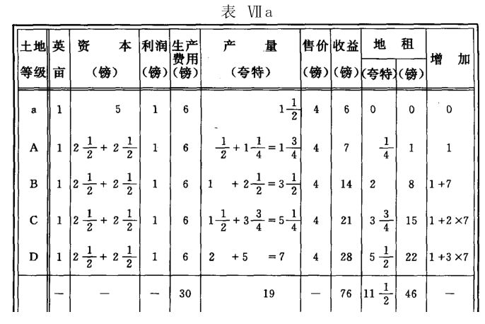
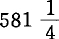
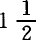
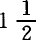
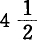
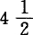
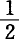

第四十三章 级差地租Ⅱ——第三种情况：生产价格上涨。结论
〔生产价格的上涨是以不支付地租的最坏土地的生产率的降低为前提的。只有当投在A上面的镑所生产的不到1夸特，5镑所生产的不到2夸特时，或者必须耕种比A更坏的土地时，起调节作用的生产价格才会高于每夸特3镑。
在第二次投资的生产率不变或提高时，上述情况只有在第一次镑投资的生产率已降低的场合，才是可能的。这样的情况是经常会发生的。例如，因浅耕而地力枯竭的表土，用旧的耕作方法，只会提供不断减少的收获，这时用深耕方法犁起深层土，通过比较合理的耕作，就会提供比以前多的收获。但严格地说，这种特殊情况不属于这里研究的范围。对较好土地来说，甚至假定那里发生类似情况时，第一次镑投资的生产率的下降，也会引起级差地租Ⅰ的下降；但在这里，我们只考察级差地租Ⅱ。不过，如果不是假定存在着级差地租Ⅱ，以上这种特殊情况是不可能发生的，并且这种情况事实上表现为级差地租Ⅰ的一种变形对级差地租Ⅱ的反作用，所以，我们要举例说明。
货币地租和货币收益，都和表Ⅱ一样。已提高的起调节作用的生产价格，恰好弥补减少了的产量；因为二者按相反的比例变动，所以，二者的积不变。
上例假定，第二次投资的生产力比第一次投资原有的生产率高。如果我们假定第二次投资的生产率只和第一次投资原有的生产率相同，情况还是一样，如下表：
在这里，生产价格按同一比例上涨，这也使得生产率的降低在收益和货币地租方面都充分得到补偿。
第三种情况，只有在第二次投资的生产率下降，第一次投资的生产率不变时（在第一和第二两种情况下，我们总是这样假定），才会以纯粹的形式出现。在这里，级差地租Ⅰ不受影响，只是由级差地租Ⅱ产生的那个部分有变化。我们可以举两个例子；在第一例中，第二次投资的生产率降低到原来的；在第二例中，第二次投资的生产率降低到原来的
表Ⅸ和表Ⅷ相同，不过在表Ⅷ中是第一次投资的生产率降低；在表Ⅸ中是第二次投资的生产率降低。
表Ⅹ中的总收益、货币地租和地租率，也和表Ⅱ，表Ⅶ，表Ⅷ中的相同，因为产量和售价又按相反的比例变动，而投资不变。
生产价格上涨时的另一种可能的情况，即一向不值得耕种的较坏土地现在已被开垦的情况，又怎样呢？
我们假定有这样一种土地（我们用a来表示）参加竞争。因此，那个一向无租的土地A也将提供地租，于是以上的表Ⅶ，表Ⅷ和表Ⅹ，将取得如下的形式：

由于a级土地的加入，产生了一种新的级差地租Ⅰ，因此在这个新的基础上，级差地租Ⅱ也会以一种变化了的形式表现出来。在上述三表的每一个表中，a级土地各有不同的肥力；按比例增加的肥力序列，只是从A级土地开始。地租的上升序列，也与此相适应。从前无租而现在有租的最坏土地的地租，形成一个不变数，被简单地加在一切较高的地租上；只有减去这个不变数，才会清楚地表现出一切较高地租上的差额的序列，以及这种序列和各种土地的肥力序列的平行状态。在所有这些表上，由A到D的肥力之比是1∶2∶3∶4；与此相应，各级地租的比：
在表Ⅶa中是1∶1＋7∶1＋2×7∶1＋3×7，
在表Ⅷa中是
在表Ⅹa中是
总之：如果A的地租＝n，并且肥力较高一级的土地的地租＝n＋m，序列就是：n∶n＋m∶n＋2m∶n＋3m等等。——弗·恩·〕
〔因为上述第三种情况，在手稿上只有一个标题，没有详细阐述，所以编者的任务，是像上面那样尽力予以补充。此外，编者还要根据以上关于级差地租Ⅱ包含的三种主要情况和九种派生情况的全部研究，得出一般性的结论。但手稿所举的各例是不大适合这个目的的。第一，这些例子中加以比较的各级土地，在面积相等时它们的收益之间的比是1∶2∶3∶4；因此，差额一开始就已经过分夸大，并且在这个基础上进一步作出各种假定和计算时，会导出十分不近情理的数值。第二，这些例子会引起完全错误的假象。如果肥力程度成1∶2∶3∶4之比，地租成0∶1∶2∶3的序列，人们立即就会认为，可以从第一个序列推出第二个序列，并以总收益的二倍、三倍等等来说明地租的二倍、三倍等等。但这是完全错误的。甚至当肥力程度的比是n∶n＋1∶n＋2∶n＋3∶n＋4时，地租的比也会是0∶1∶2∶3∶4；地租之比和肥力程度之比并不成比例，而是和以无租土地作为零计算的肥力差额之比成比例。
手稿上的表是为说明正文而必须列举的。但为了给以下的研究结果提供一个一目了然的根据，我在下面举出一系列新表，在这些表中，收益是以蒲式耳（夸特或36.35公升）和先令（＝马克）计算的。
第一个表（表Ⅺ）相当于以上的表Ⅰ。其中列举五级土地A—E的收益和地租，第一次投资50先令，加上利润10先令，形成每英亩的总生产费用＝60先令。谷物收获量定得很低，每英亩10、12、14、16、18蒲式耳。由此得到的起调节作用的生产价格，是每蒲式耳6先令。
以下的13个表相当于本章及前二章论述的级差地租Ⅱ的三种情况，假定同一土地每英亩的追加投资为50先令，生产价格不变，下降，或上涨。这三种情况中的每一种情况，又按照第二次投资和第一次投资相比时生产率1.不变，2.降低，或3.提高的不同情况分别加以说明。这里得出了几个还特别可以用图表来说明的变例。
第一种情况：生产价格不变。这时我们得到：
变例1：第二次投资的生产率不变（表Ⅻ）。
变例2：生产率降低。这种情形只能发生在A级土地上没有第二次
投资的时候。这样一来，或者
（a）B级土地也不提供地租（表ⅩⅢ），或者
（b）B级土地不是完全没有地租（表ⅩⅣ）。
变例3：生产率提高（表ⅩⅤ）。这个情况也排除A级土地上的第二次投资。
第二种情况：生产价格下降。我们得到：
变例1：第二次投资的生产率不变（表ⅩⅥ）。
变例2：生产率降低（表ⅩⅦ）。
这两个变例都假定A级土地退出竞争，B级土地变成无租土地，并且调节生产价格。
变例3：生产率提高（表ⅩⅧ）。在这里A级土地仍起调节作用。
第三种情况：生产价格上涨。这时可能有两种方式：或者A级土地仍然是无租的，并且仍然起调节价格的作用；或者比A级更坏的土地加入竞争，并调节价格，因此A级土地也提供地租。
第一种方式：A级土地仍然起调节作用。
变例1：第二次投资的生产率不变（表ⅪⅩ）；在我们的假定下，这个情况只有在第一次投资的生产率降低时才会发生。
变例2：第二次投资的生产率降低（表ⅩⅩ）；这种情况并不排除第一次投资生产率不变的现象。
变例3：第二次投资的生产率提高（表ⅩⅪ）；这又假定第一次投资的生产率降低。
第二种方式：一种较坏的土地（以a表示）加入竞争；A级土地提供地租。
变例1：第二次投资的生产率不变（表ⅩⅫ）。
变例2：生产率降低（表ⅩⅩⅢ）。
变例3：生产率提高（表ⅩⅩⅣ）。
这三个变例都符合问题的一般条件，无须进一步加以说明。
现在列表如下：
第一种情况：生产价格不变。
变例1：第二次投资的生产率不变。
变例2：第二次投资的生产率降低；A级土地没有第二次投资。
1.B级土地变为无租土地：
变例3：第二次投资的生产率提高，A级土地在这里也没有第二次投资。
第二种情况：生产价格下降。
变例1：第二次投资的生产率不变。A级土地退出竞争，B级土地变为无租土地。
变例2：第二次投资的生产率降低；A级土地退出竞争，B级土地变为无租土地。
变例3：第二次投资的生产率提高；A级土地仍参加竞争。B级土地提供地租。
第三种情况：生产价格上涨。
A.A级土地仍然是无租的，并仍起调节价格的作用。
变例1：第二次投资的生产率不变；这要假定第一次投资的生产率降低。
变例2：第二次投资的生产率降低；这并不排斥第一次投资的生产率不变。
变例3：第二次投资的生产率提高；按照假定，这要求第一次投资的生产率降低。
B.一种较坏的土地（用a表示）起调节价格的作用，因而A级土地也提供地租。这种情形，对所有的变例来说，都允许第二次投资的
生产率不变。
变例1：第二次投资的生产率不变。
变例2：第二次投资的生产率下降。
变例3：第二次投资的生产率提高。
从以上各表得出如下结论：
首先，把没有地租的起调节作用的土地作为零点，地租序列恰好与肥力差额序列成比例。对地租起决定作用的，不是绝对的收益，而只是收益的差额。无论各级土地每英亩分别提供1，2，3，4，5蒲式耳，还是提供11，12，13，14，15蒲式耳产品，地租在这两种情况下形成的序列，都是0，1，2，3，4蒲式耳或与此相应的货币额。
但是，这个结论，就同一土地上反复进行投资的总地租额来说，是更重要得多的。
在以上研究的13例中，有5例地租总额都在投资增加一倍时增加一倍。不是10×12先令，而是10×24先令＝240先令。这五例是：
第一种情况，价格不变，变例1：生产按等速度增长（表Ⅻ）。
第二种情况，价格下降，变例3：生产按加速度增长（表ⅩⅧ）。
第三种情况，价格上涨，第一种方式（A级土地仍起调节作用）所包括的所有3个变例（表ⅪⅩ，ⅩⅩ，ⅩⅪ）。
有4例地租增加一倍以上。这4例是：
第一种情况，变例3，价格不变，但生产按加速度增长（表ⅩⅤ）。地租总额增加到330先令。
第三种情况，第二种方式（A级土地提供地租）所包括的所有3个变例（表ⅩⅫ，地租＝15×30＝450先令；表ⅩⅩⅢ，地租＝5×20＋10×28＝380先令；表ⅩⅩⅣ，地租＝5×15＋15×先令）。
有一例地租总额增加了，但不是增加第一次投资提供的地租额的一倍：
第一种情况，价格不变，变例2：第二次投资的生产率降低，不过是以B级土地不是完全没有地租为条件的（表ⅩⅣ，地租＝4×6＋6×21＝150先令）。
最后，只有3例是，一切土地合计的地租总额，在进行第二次投资时，和第一次投资时（表Ⅺ）一样。在这几例中，A级土地退出竞争，B级土地成了起调节作用的无租土地。因此，不仅B级土地的地租会消失，而且这一地租还会从地租序列中每一后续等级中扣减；结果就是由此而来的。这几例是：
第一种情况，变例2，那里的条件是，A级土地要被排挤（表ⅩⅢ）。地租总额是6×20，因而＝10×12＝120，和表Ⅺ一样。
第二种情况，变例1和变例2。在那里，按照假定，A级土地也必然被排挤（表ⅩⅥ和表ⅩⅦ），地租总额也是6×20＝10×12＝120先令。
这也就是说，在所有可能的情况中，就大多数情况来说，由于土地投资增加，每英亩有租土地的地租，特别是地租总额都会增加。在我们研究过的13例中，只有3例地租总额不变。在这3例中，最坏的、一向无租的、起调节作用的土地退出竞争，高一级的土地代替了它的位置，成为无租土地。但就在这3例中，最好的土地的地租同第一次投资产生的地租相比也增加了。当C的地租由24先令减少到20先令时，D和E的地租则由36先令和48先令增加到40先令和60先令。
总地租下降到低于第一次投资的地租水平（表Ⅺ）的情形，只有在下述情况下才是可能的：A级土地和B级土地都退出竞争，C级土地起调节作用并且变为无租土地。
可见，只要已耕种的土地仍有竞争能力，土地上使用的资本越多，一国的农业和整个文明越发展，每英亩的地租和地租总额就增加得越多，社会以超额利润形式付给大土地所有者的贡赋也就越多。
这个规律说明了大土地所有者阶级的可惊的顽强生命力。任何一个社会阶级也不像他们那样浪费；任何一个社会阶级也不像他们那样竟有权要求维持一种传统的“适合身份”的奢侈生活，而不管挥霍掉的钱是从哪里来的；任何一个社会阶级也不像他们那样可以放心大胆地负债累累。他们总会再站住脚，因为别人在土地上的投资为他们提供地租，并且这种地租远远超过资本家从土地取得的利润。
但是，这个规律也说明，为什么大土地所有者的这种顽强生命力会逐渐枯竭。
当英国谷物关税在1846年废除时，英国的工厂主们都以为，这样一来，他们会把土地贵族变为需要救济的贫民。但实际不是这样，土地贵族反而比以前任何时候都更富有了。这是怎么回事呢？非常简单。第一，从那以后，租地农场主必须按照契约每年对每英亩投资12镑，而不是8镑。第二，在下院也拥有很多代表的地主们，批给自己一笔巨大的国家补助金，用于土地的排水及其他永久性的改良。因为最坏土地没有完全被排挤掉，至多不过改为别的用途，并且在大多数情况下这也只是暂时的现象，所以，地租就与投资的增加成比例地增加了，土地贵族也比以前任何时候都更富有了。
但是，一切都是短暂的。横渡海洋的轮船，南北美洲和印度的铁路，使一些十分特别的地带能够参加欧洲谷物市场上的竞争。一方面，有北美的大草原、阿根廷的潘帕斯草原，这些草原是天然宜于开垦的；这些处女地，甚至用原始的耕作方法，不施肥料，也能够连年得到丰收。此外，还有俄罗斯和印度的共产主义公社的土地，这些公社为了获得纳税的钱（这种税是暴虐的国家专制制度经常用酷刑逼迫它们交纳的），必须卖掉它们的一部分产品，并且这部分产品越来越增多。出售这种产品，不考虑生产费用的多少，而是按照商人出的价钱，因为在支付期限到来时，农民无论如何要得到货币。欧洲的租地农场主和农民在地租维持原样的情况下，当然竞争不过这种草原处女地以及屈服于赋税重压的俄罗斯和印度的农民。一部分欧洲土地就从种植谷物的竞争中完全退出来；地租到处都在下降；我们列举的第二种情况的变例2（价格下降，追加投资的生产率也下降）成了欧洲的通例。因此，从苏格兰到意大利，从法国南部到东普鲁士，到处都听得到地主的怨言。值得庆幸的是，所有草原还远没有全被开垦；还留有足够数量的草原可以使欧洲所有大地主以及小地主遭到破产。——弗·恩·〕
对地租进行考察的各个项目如下：
A.级差地租。
1.级差地租的概念。以水力作为例解。过渡到真正的农业地租。
2.由各级土地的不同肥力产生的级差地租Ⅰ。
3.由同一土地上的连续投资产生的级差地租Ⅱ。关于级差地租Ⅱ，要研究以下各种情况：
（a）生产价格不变；
（b）生产价格下降；
（c）生产价格上涨。
还要研究：
（d）超额利润转化为地租。
4.这一地租对利润率的影响。
B.绝对地租。
C.土地价格。
D.关于地租的结论。
对级差地租进行的考察，可以得出如下一般的结论：
第一：超额利润可以按不同的途径形成。一方面，是以级差地租Ⅰ为基础，也就是说，以全部农业资本投入由肥力不同的各级土地构成的土地面积为基础。其次，作为级差地租Ⅱ，是以同一土地上的连续投资有不同的级差生产率为基础，也就是说，在这里，和最坏的、无租的、但调节生产价格的土地上的等量投资相比，具有较高的生产率，例如，表现为若干夸特小麦。但是，不论这种超额利润是怎样产生的，它所以转化为地租，从而由租地农场主手里转到土地所有者手里，总是具有下列先决条件：各个连续投资的各部分产品所具有的不同的实际的个别生产价格（与一般的、调节市场的生产价格无关），已事先平均化为个别平均生产价格。一英亩产品的一般的起调节作用的生产价格超过其个别的平均生产价格而形成的余额，形成每英亩的地租，并成为每英亩地租的尺度。就级差地租Ⅰ来说，级差结果本身就是可以区别的，因为它们是在不同的、互相分开的、彼此靠近的土地上，在假定每英亩进行标准投资以及与此相应地进行标准耕种的情况下形成的。就级差地租Ⅱ来说，必须使级差结果先变成可以区别的，实际上必须使它再转化为级差地租Ⅰ，而这一点只有按照上述的方法才能做到。例如，我们来看第226页(1)上的表Ⅲ。
B级土地第一个镑的投资每英亩产生2夸特，第二个同样大的投资每英亩产生 夸特；在同一英亩上合计产生夸特。就这个从同一土地产生的夸特来看，看不出其中哪一部分是第一个投资的产物，哪一部分是第二个投资的产物。事实上，它们是总资本5镑的产物；实际情况只是，一个镑的资本产生2夸特，一个5镑的资本却不是产生4夸特，而是产生夸特。即使5镑产生4夸特，从而两个投资的产量相等，或者甚至产生5夸特，从而第二个投资产生1夸特的余额，情形也完全一样。前2夸特的生产价格是每夸特镑，后夸特的生产价格是每夸特2镑。因此3夸特总计的费用是6镑。这是总产品的个别生产价格，平均计算是每夸特1镑先令，就是说约为镑。按A级土地决定的一般生产价格3镑计算，这一个别生产价格会提供每夸特镑的超额利润，夸特合计 镑。按B级土地的平均生产价格计算，这体现在约夸特中。也就是说，B级土地的超额利润体现在B的一部分产品中，即夸特中，而这就是以谷物来表现的地租；按一般生产价格计算，这些谷物要卖镑。但是相反地，B级土地一英亩比A级土地一英亩多余的产品，并不直接就是超额利润的表现，因此也并不直接就是超额产品的表现。按照假定，B级土地每英亩生产夸特，A级土地每英亩只生产1夸特。所以，B级土地一英亩的多余的产品是夸特，但超额产品却只是
镑。按B级土地的平均生产价格计算，这体现在约夸特中。也就是说，B级土地的超额利润体现在B的一部分产品中，即夸特中，而这就是以谷物来表现的地租；按一般生产价格计算，这些谷物要卖镑。但是相反地，B级土地一英亩比A级土地一英亩多余的产品，并不直接就是超额利润的表现，因此也并不直接就是超额产品的表现。按照假定，B级土地每英亩生产夸特，A级土地每英亩只生产1夸特。所以，B级土地一英亩的多余的产品是夸特，但超额产品却只是 夸特；因为B级土地上的投资，比A级土地上的投资多一倍，生产费用也多一倍。如果A级土地同样有5镑投资，生产率不变，它的产品就是2夸特，而不是1夸特，由此可见，实际的超额产品，并不是由和1比较，而是由和2比较得出来的。所以，超额产品不是夸特，而只是1夸特。其次，如果B级土地的第三个投资镑只生产1夸特，因而和A级土地的情况一样，这1夸特要费3镑，它的出售价格3镑就只够弥补生产费用，只提供平均利润，而不提供超额利润，因此也就没有任何部分可以转化为地租。任何一级土地每英亩的产量和A级土地每英亩的产量相比较时，既看不出它是同额投资的产品还是较大投资的产品；也看不出，追加产品是只够补偿生产价格，还是产生于追加资本的较高的生产率。
夸特；因为B级土地上的投资，比A级土地上的投资多一倍，生产费用也多一倍。如果A级土地同样有5镑投资，生产率不变，它的产品就是2夸特，而不是1夸特，由此可见，实际的超额产品，并不是由和1比较，而是由和2比较得出来的。所以，超额产品不是夸特，而只是1夸特。其次，如果B级土地的第三个投资镑只生产1夸特，因而和A级土地的情况一样，这1夸特要费3镑，它的出售价格3镑就只够弥补生产费用，只提供平均利润，而不提供超额利润，因此也就没有任何部分可以转化为地租。任何一级土地每英亩的产量和A级土地每英亩的产量相比较时，既看不出它是同额投资的产品还是较大投资的产品；也看不出，追加产品是只够补偿生产价格，还是产生于追加资本的较高的生产率。
第二：在我们考察新的超额利润的形成时，追加投资的界限是只够补偿生产费用的投资，就是说，这个投资生产1夸特的费用和A级土地一英亩上同额投资生产1夸特的费用相等，按照假定是3镑。在追加投资的生产率降低时，根据前面的说明，可以得出以下结论：B级土地每英亩总投资不再提供地租的界限是，B级土地每英亩产品的个别平均生产价格已上涨到A级土地每英亩的生产价格。
如果B级土地上追加的投资只能补偿生产价格，而不提供超额利润，也不形成新的地租，这虽然会提高每夸特的个别平均生产价格，但不会影响以前投资所形成的超额利润或地租。因为平均生产价格总是低于A级土地的生产价格，并且当每夸特价格的余额减少时，夸特数将按相同的比例增加，所以价格的全部余额仍然不变。
在上述假定的情况下，最初两个投资5镑在B级土地上生产夸特，因而按照假定，地租是夸特＝镑。如果有第三个投资镑加进去，它只生产出追加的1夸特，那么，总生产价格（包括20%的利润）夸特＝9镑，每夸特的平均价格＝2镑。所以，B级土地每夸特的平均生产价格已由镑增加到2镑，和A级土地的起调节作用的价格相比，每夸特的超额利润也已由镑减少到1镑。但镑，和以前镑完全一样。
假定再有第四个和第五个追加的投资各镑投在B级土地上，这两个投资只是按一般的生产价格各生产1夸特，那么，每英亩的总产量现在就是夸特，它的生产费用是15镑。对B级土地来说，每夸特的平均生产价格已由2镑再增加到镑，和A级土地起调节作用的生产价格相比，每夸特的超额利润，已由1镑再减少到镑。但这镑现在是按夸特计算，而不是按夸特计算。 镑。
镑。
首先，由此得出的结论是，在这些情况下，不必提高起调节作用的生产价格，就可以在各种提供地租的土地上投入追加资本，甚至直到追加资本完全不提供超额利润，而只提供平均利润时为止。其次，由此得出的结论是，在这里，不管每夸特的超额利润怎样减少，每英亩的超额利润总额还是不变；这种减少，会不断由每英亩生产的夸特数目的相应增加而得到补偿。要使平均生产价格提高到一般生产价格的水平（因此，在这里，对B级土地来说，就是上涨到3镑），必须追加投资，而这种追加资本的产品的生产价格要高于3镑这一起调节作用的生产价格。但是，我们将看到，单是这样也不足以直接使B级土地每夸特的平均生产价格提高到和一般生产价格3镑相等的程度。
我们假定B级土地：
1.按以上所说的生产价格6镑，生产夸特。这是两个各 镑的投资；这两个投资都形成超额利润，不过是按下降的水平形成的。
镑的投资；这两个投资都形成超额利润，不过是按下降的水平形成的。
2.再按3镑生产1夸特；这个投资的个别生产价格，和起调节作用的生产价格相等。
3.再按4镑生产1夸特；这个投资的个别生产价格，比起调节作用的价格高
这样，我们已由镑的投资，按13镑，每英亩生产夸特；投资额比原来的投资额增加了三倍，但产量比第一个投资的产量增加还不到两倍。
5(1/2)夸特按13镑计算，每夸特的平均生产价格是镑。所以，在起调节作用的生产价格为3镑时，每夸特有镑的余额可以转化为地租。按起调节作用的价格3镑出售， 夸特卖镑，减去生产费用13镑，还有超额利润或地租镑。这镑，按B级土地现在每夸特的平均生产价格计算，也就是按每夸特镑计算，代表夸特。货币地租下降了1镑，谷物地租下降了大约夸特，但是，尽管B级土地上的第四个追加投资不仅不生产超额利润，而且达不到平均利润，可是超额利润和地租仍然存在。我们假定，不仅第三个投资，而且第二个投资也是按照超过起调节作用的生产价格的价格进行生产的，因此总生产是：按6镑生产夸特＋按8镑生产2夸特，总共按14镑生产费用生产夸特。每夸特的平均生产价格是镑，还留下镑的余额。这夸特按3镑出售，得镑；减去14镑的生产费用，还留下镑作为地租。按B现在的平均生产价格计算，这等于夸特。所以，总还是留有地租，虽然比以前少。
夸特卖镑，减去生产费用13镑，还有超额利润或地租镑。这镑，按B级土地现在每夸特的平均生产价格计算，也就是按每夸特镑计算，代表夸特。货币地租下降了1镑，谷物地租下降了大约夸特，但是，尽管B级土地上的第四个追加投资不仅不生产超额利润，而且达不到平均利润，可是超额利润和地租仍然存在。我们假定，不仅第三个投资，而且第二个投资也是按照超过起调节作用的生产价格的价格进行生产的，因此总生产是：按6镑生产夸特＋按8镑生产2夸特，总共按14镑生产费用生产夸特。每夸特的平均生产价格是镑，还留下镑的余额。这夸特按3镑出售，得镑；减去14镑的生产费用，还留下镑作为地租。按B现在的平均生产价格计算，这等于夸特。所以，总还是留有地租，虽然比以前少。
无论如何，这种情况表明，在有追加投资的较好土地上的产品的费用超过起调节作用的生产价格时，地租不会消失，至少在实践上允许的界限以内是这样，不过必然会减少，并且这种减少一方面同这种生产率较低的资本在总投资中所占的份额成比例，另一方面同这种资本的生产率的降低成比例。这种资本的产品的平均价格，总还是低于起调节作用的价格，所以总还是会留下可以转化为地租的超额利润。
现在我们假定，由于连续四次投资（镑，镑，5镑，5镑）的生产率的逐步降低，B每夸特的平均价格和一般的生产价格是一致的。
在这里，租地农场主是按照每夸特的个别生产价格出售每一夸特的，所以，夸特总数额是按照每夸特的平均生产价格出售的，而这个平均生产价格是和起调节作用的价格3镑一致的。所以，他仍然为他的15镑资本取得了20%的利润＝3镑。但地租已消失。当每夸特的个别生产价格和一般生产价格这样拉平时，余额到哪里去了呢？
第一次投资镑的超额利润是3镑；第二次投资镑的超额利润是镑；因此预付资本的即5镑的超额利润，总计为镑＝90%。
第三次投资5镑不但没有产生超额利润；它的产品夸特，按照一般生产价格出售，还会产生镑的负数。最后，第四次投资5镑的产品1夸特，按照一般生产价格出售，又会产生3镑的负数。所以，这两次投资一共产生镑的负数，同第一次和第二次投资产生的超额利润镑相等。
超额利润和负利润互相抵消了。因此，地租消失了。但事实上这种情况之所以可能，只是因为剩余价值中形成超额利润或地租的要素，现在已经加入平均利润的形成。租地农场主靠牺牲地租，才由15镑赚到3镑或20%的平均利润。
B的个别平均生产价格平均化为A的一般的调节市场价格的生产价格，是以下述情况为前提的：前几次投资的产品的个别价格低于起调节作用的价格而形成的差额，越来越为以后几次投资的产品的个别价格高于起调节作用的价格而形成的差额所抵消，最后完全拉平。前几次投资的产品本身出售时表现为超额利润的东西，会逐渐变为它们的平均生产价格的一部分，加入平均利润的形成，直到最后完全被平均利润所吸收。
如果投在B上面的资本不是15镑，只是5镑，并且上表中追加的夸特，是由于按每英亩投资 镑新耕种A级土地英亩而生产出来的，那么，投入的追加资本就只是镑，因而，为生产这6夸特而用在A和B上面的总支出也只是镑，而不是15镑，这6夸特的总生产费用（包括利润）也只是镑。这6夸特仍然总共卖18镑，不过投资已减少镑，而B的地租仍然是每英亩镑。如果追加的夸特必须靠比A更坏的土地，例如A-1，A-2来生产，情况就会不同，这样一来，对A-1级土地的夸特来说，每夸特的生产价格＝4镑，而对最后1夸特，即A-2级土地所生产的1夸特来说，生产价格＝6镑。这时，6镑就会成为每夸特的起调节作用的生产价格。B级土地的夸特就会卖21镑，而不是镑，所提供的地租就会是15镑，而不是镑；以谷物计算，是夸特，而不是夸特。同样，A级土地每夸特现在也会提供3镑的地租＝夸特。
镑新耕种A级土地英亩而生产出来的，那么，投入的追加资本就只是镑，因而，为生产这6夸特而用在A和B上面的总支出也只是镑，而不是15镑，这6夸特的总生产费用（包括利润）也只是镑。这6夸特仍然总共卖18镑，不过投资已减少镑，而B的地租仍然是每英亩镑。如果追加的夸特必须靠比A更坏的土地，例如A-1，A-2来生产，情况就会不同，这样一来，对A-1级土地的夸特来说，每夸特的生产价格＝4镑，而对最后1夸特，即A-2级土地所生产的1夸特来说，生产价格＝6镑。这时，6镑就会成为每夸特的起调节作用的生产价格。B级土地的夸特就会卖21镑，而不是镑，所提供的地租就会是15镑，而不是镑；以谷物计算，是夸特，而不是夸特。同样，A级土地每夸特现在也会提供3镑的地租＝夸特。
只要总资本中生产夸特余额的部分，为总资本中生产夸特负额的部分所抵消，B级土地1夸特的平均价格就会通过互相拉平而形成，而与由A调节的一般的生产价格每夸特3镑相一致。至于这种平均化究竟什么时候可以达到，或者说，为了这个目的必须有多少资本以不足的生产力投在B级土地上，那么，在前几次投资的超额生产率已定的情况下，这取决于以后几次投资的生产率同最坏的起调节作用的土地A上的等量投资相比相对不足的情况，或者说，取决于以后几次投资的产品的个别生产价格同起调节作用的价格相比的情况。
根据以上所述，首先可以得出如下结论：
第一：只要各追加资本是以超额生产率投在同一土地上，即使这种生产率越来越下降，每英亩的绝对的谷物地租和货币地租也会增加，虽然相对地即和预付资本相比（即超额利润率或地租率）会降低。在这里，界限是由这样一种追加资本形成的，这种追加资本只提供平均利润，或它的产品的个别生产价格和一般生产价格是一致的。在这些情况下，生产价格将不变，除非比较坏的土地的生产由于供给增加而变为多余。甚至价格下降时，这些追加资本在一定界限内仍然能生产超额利润，虽然是减少了的超额利润。
第二：只生产平均利润、其超额生产率＝0的追加投资，决不会改变现有的超额利润量，从而也不会改变地租量。因此，较好的土地每夸特的个别平均价格将会提高；每夸特的余额减少了，但提供这个减少了的余额的夸特数却增加了；因此，二者的积将不变。
第三：如果追加投资的产品的个别生产价格，超过起调节作用的价格，因此，追加投资的超额生产率不仅＝0，而且比零小，是一个负数，也就是说，比同额投资在起调节作用的A级土地上的生产率还小，那么，追加投资就会使较好土地的总产品的个别平均价格越来越接近一般生产价格，因而越来越减少二者间形成超额利润或地租的差额。原来形成超额利润或地租的东西，现在越来越多地加入平均利润的形成。但投在B级土地一英亩上的总资本将继续提供超额利润，虽然它会随着生产率不足的资本的总量的增加而减少，并且会按生产率不足的程度而减少。在资本增加，生产增加时，这里每英亩的地租将绝对下降，而不是像在第二种情况下那样，只是相对地即同投资的增加量相比会下降。
只有当较好土地B的总产品的个别平均生产价格和起调节作用的价格一致时，地租才会消失。这时，生产率较高的前几次投资的超额利润，就会全部加入平均利润的形成。
每英亩地租的下降是以地租归于消失的那个点为最低界限的。但是，并不是一当追加投资以不足的生产率进行生产时就达到了这个点，而是在下述情况下才达到这个点，即生产率不足的追加投资已够多了，以致它们的作用足以抵消前几次投资的超额生产率，所投总资本的生产率已经和A级土地的资本的生产率相等，B级土地每夸特的个别平均价格已经和A级土地每夸特的个别平均价格相等。
即使在这种情况下，虽然地租已经消失，起调节作用的生产价格，每夸特3镑，仍然不变。只是或者由于追加资本生产率不足的程度已经增加，或者由于具有同一不足生产率的追加资本量已经加大，才必然会使生产价格的提高超过这个点。例如，在前面第265页(2)的那个表内，如果在同一土地上按每夸特4镑生产出来的是夸特，而不是夸特，那么，合计7夸特的生产费用就是22镑；每夸特的费用就是镑，比一般生产价格贵镑。因此，一般生产价格必须提高。
因此，直到最好土地的每夸特的个别平均价格和一般生产价格变得相等，直到后者超过前者的余额完全消失，从而超额利润和地租完全消失以前，还可以长时期使用生产率不足的、甚至生产率越来越不足的追加资本。
甚至在这种情况下，当较好土地的地租消失时，它们的产品的个别平均价格只不过和一般生产价格一致，因此一般生产价格仍不需要提高。
在以上的例子中，在较好土地B——但它在较好土地或有租土地的序列中处于最低的等级——上，夸特是由一个具有超额生产率的5镑资本生产出来的，夸特是由一个具有不足生产率的10镑资本生产出来的，合计6夸特；所以，是由后面这些生产率不足的资本部分生产出来的。并且只有达到这个点，这6夸特的个别平均生产价格才提高到每夸特3镑，因此和一般的生产价格一致。
但是在土地所有权规律的支配下，后面这夸特是不能用这种方式按每夸特3镑生产的，除非它们能在英亩新的A级土地上生产出来。追加资本尚能按一般生产价格来进行生产的情况形成一个界限。超过这个界限，同一土地上的追加投资就必须停止。
这就是说，租地农场主一旦要对前两次投资支付镑的地租，他就要继续支付这个地租，并且每夸特生产费用高于3镑的每次投资，都会使他的利润减少。这样一来，在生产率不足的场合下，个别平均价格的平均化就遇到阻碍。
我们再就上例来研究一下这种情形。在这个例子中，A级土地每夸特3镑的生产价格，对B级土地来说，起着调节价格的作用。
前两次投资所生产的夸特的生产费用，对租地农场主来说，同样是每夸特3镑，这时他要支付镑的地租，结果，他的个别生产价格和一般生产价格之间的差额就不是流进他的腰包。因此，对他来说，前两次投资的产品的价格余额，不能用来弥补第三次投资和第四次投资产量上的不足。
第三次投资所产生的夸特的费用，对租地农场主来说是6镑（包括利润在内）；但在起调节作用的价格为每夸特3镑时，他只能把这夸特卖镑。所以，他不仅会失掉全部利润，而且除此以外还要损失镑，即所投资本5镑的10%。就第三次投资来说，他的利润和资本的损失是镑；就第四次投资来说，他的利润和资本的损失是3镑，合计是镑，恰好和前面两次较好的投资的地租相等。但前面那两次投资的个别生产价格，不能作为平均化因素进入B的总产品的个别平均生产价格，因为它的余额要继续作为地租交给另一个人。
如果为了满足需要，有必要由第三次投资来生产追加的夸特，起调节作用的市场价格就必须上涨到每夸特4镑。由于起调节作用的市场价格的这种提高，B的第一次投资和第二次投资的地租将增加，并且A也会形成地租。
因此，级差地租虽然只是超额利润到地租的一种形式上的转化，土地所有权在这里只是使土地所有者能够把超额利润从租地农场主手里转到自己手里，但是我们还是会发现，同一块土地上的连续投资，或者说同一地块上投资的增加，在资本的生产率下降和起调节作用的价格不变的情况下，将会更早得多地遇到它的界限，就是说，由于超额利润到地租的纯粹形式上的转化（这是土地所有权的结果）而在事实上或多或少遇到一种人为的界限。因此，在这里，一般生产价格的上涨（在这里，这种上涨在界限比往常变得更狭小的情况下是必要的）不仅是级差地租上涨的原因，而且级差地租作为地租的存在同时又是一般生产价格更早、更迅速地上涨的原因。通过这种上涨，便保证了已成为必要的追加产品的供给。
此外，还要说明一点：
如果A级土地通过第二次投资提供的追加产品低于4镑，或者，如果有一种比A更坏的新的土地加入竞争，它的生产价格虽然超过3镑，但低于4镑，那么，起调节作用的价格就不能由于在B级土地上追加资本而像上例中那样提高到4镑。所以我们看到，级差地租Ⅰ虽然是级差地租Ⅱ的基础，但它们同时互为界限，这使得资本有时连续投在同一块土地上，有时并行地投在新追加的土地上。在别的情况下，例如在有较好土地加入序列时，它们也同样会互为界限。
(1) 见本卷第776页。——编者注
(2) 见本卷第827页。——编者注